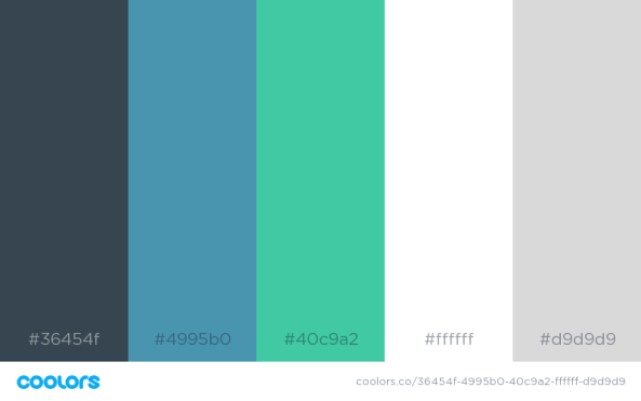

Color Scheme:

#36454f: This color will be used for the background of the navigation menu, this color is also used as the text and background color in the logo image.
#4995b0: This color will be used for the background of the header, footer, h2 backgrounds, hover for the links, and in the logo image.
#40c9a2: This color will be used for the links and in the logo image.
#ffffff: This color will be used for h1, h2, h3, h4, and the nav.
#d9d9d9: This color will be used for the main background, and visited links.